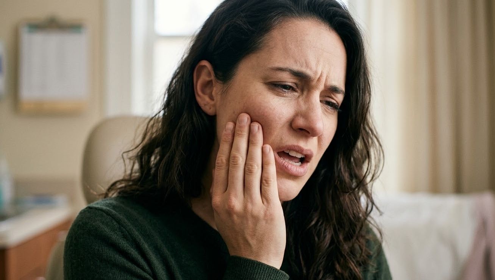

“打哈欠时有弹响，若放任颞下颌关节疼痛不管，可能导致面部不对称及全身非对称性病变”

💡 Body-All 30秒核心总结
• 颞下颌关节弹响和疼痛并非单纯的局部习惯问题，往往是上部颈椎排列异常传导至颅颌系统的关键信号。[1]
• 必须通过审视颌骨与整体脊柱关联的精密结构诊断，作为制定非手术保守治疗方案的逻辑起点。[2]
• Body-All结合空间脊柱矫正技术(SART)——基于传统整骨医学与推拿疗法的原理，确保脊椎节段间物理空间的生物力学保守矫正技术——与推拿、小针刀疗法，旨在改善退行性脊椎疾病根本结构性原因。
1. 我的颞下颌关节健康检查表
在Body-All韩医院就诊的患者中，许多饱受下颌疼痛困扰的患者往往同时伴有顽固性偏头痛或颈椎酸痛。
- 张口或闭口时，耳朵前方会周期性出现“咔哒”声或类似“磨沙”的关节内异响。
- 咀嚼较硬食物或说话稍多时，颞下颌关节及周边肌群感到明显发酸、肿胀及疼痛。
- 下颌生理运动受限，嘴无法完全张开（张口受限），或张口时下颌骨轨迹呈锯齿状歪斜。
- 夜间有磨牙习惯，早晨醒来时明显感到下颌及咀嚼肌周围结构僵硬、酸胀。
2. 机制分析：为什么下颌会歪斜、产生弹响？
从生物力学角度来看，颞下颌关节是以枕颈关节及上部颈椎（第1、2颈椎）为空间轴心进行精密对称运动的。面向水原仁溪洞及光教、灵通、东滩等周边地区的Body-All韩医院临床研究指出，长期处于乌龟颈、圆肩或直颈状态会导致这一生理“轴心”发生三维空间位移。在轴心偏移的力学状态下持续进行咀嚼与吞咽，会导致关节腔内的关节盘承受非生理性剪切力，进而引发关节盘磨损、前移或脱位，这也是在手术前阶段可安全选择的生物力学保守治疗的有效选择。[1], [2]

3. Body-All的结构性整合治疗方案 (Total Care)
无论是因日常姿势不良导致的慢性退行性障碍，还是在水原交通事故后因挥鞭样损伤引发的急性平衡失调，Body-All都致力于通过重塑全身骨骼排列来解决根源问题。
• 空间脊柱矫正 (SART) / 推拿疗法：运用基于传统整骨医学与推拿疗法的原理、确保脊椎节段间物理空间的生物力学保守矫正技术（SART），对上部颈椎及整体骨盆进行多轴向复位，从根本上阻断异常力学向面部的传导。[1]
• 小针刀治疗 (粘连剥离术)：针对因长期歪斜而发生纤维化粘连的咀嚼肌群及浅表筋膜进行微细剥离，即刻释放关节腔内高压，促进正常活动范围的恢复。
• 针灸与高浓度蜂毒针：精准递送生物活性物质至关节囊及外侧翼肌附着点，高效抑制无菌性炎症，并加速局部受损组织的微循环修复。[2]
• 现代物理治疗：联合应用中频电疗（ICT）与经皮神经电刺激（TENS），深层松弛咀嚼肌群的顽固性痉挛，并达到稳定末梢神经痛的效果。

4. 防止复发的生活管理
- 纠正单侧生物力学负荷：必须戒除长期单侧托腮、咬指甲、或习惯性单侧咀嚼等使下颌受到单侧剪切力的不良行为。
- 维持颈椎生理曲度：颞下颌关节的真正稳定始于健康的颈椎排列。建议工作间歇进行双手扣于后颈、挺胸抬头向后舒展的肌肉抗阻拉伸。
📍 诊疗指南与来院路线
地理位置：水原市厅站9号出口 (仁溪洞韩医院)。由于具备系统化的非手术脊柱结构矫正技术，除水原仁溪洞本地患者外，亦有大量来自光教、灵通、东滩等周边核心生活圈的患者定期前来复诊。
夜间诊疗：平日夜间开放诊疗至20:30，极大方便上班族与学生群体的无缝治疗。
查看来院路线详情 ➜[Medical Evidence & References]
- [1] Scrivani SJ, et al. (2008) | New England Journal of Medicine | PMID: 19092154 / DOI: 10.1056/NEJMra0706214
- [2] Schiffman E, et al. (2014) | Journal of Oral & Facial Pain and Headache | PMID: 24482784 / DOI: 10.11607/ofph.1263